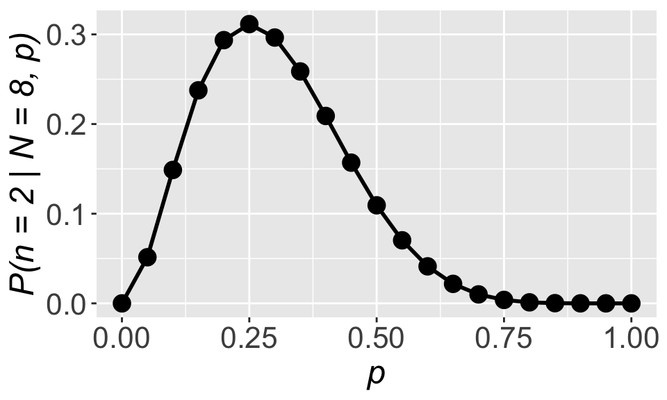
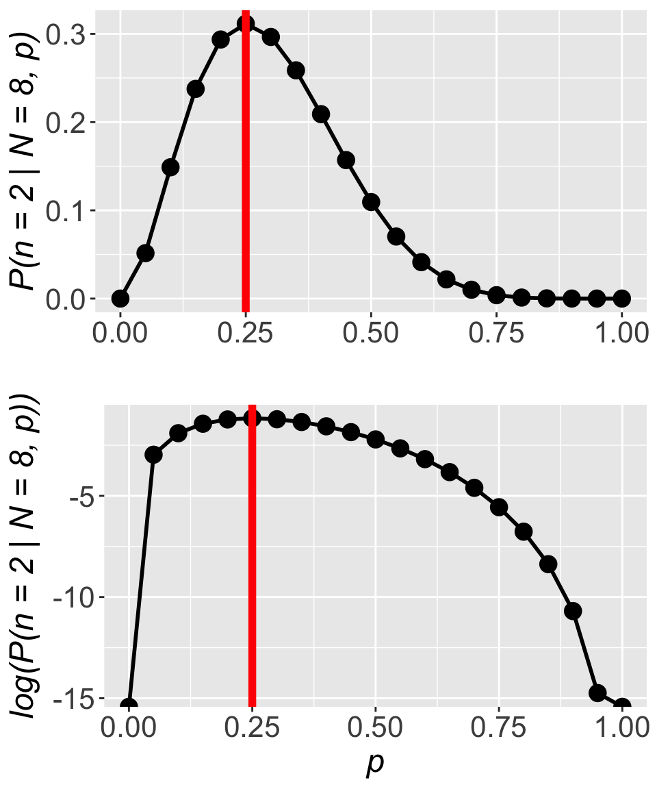
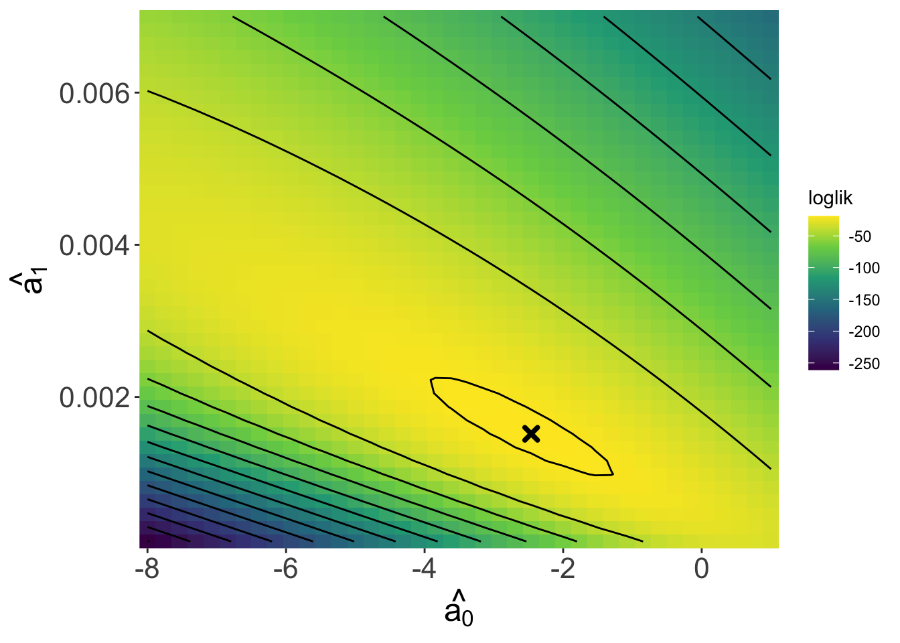
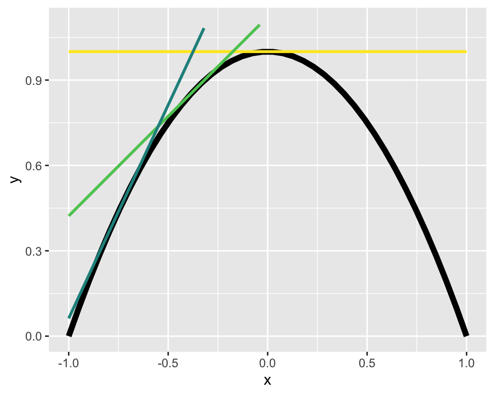

kahuli <- c(0, 0, 1, 0, 1, 0, 0, 0)
kahuli[1] 0 0 1 0 1 0 0 0Kāhuli are the beautiful, diverse, and storied land snails of Hawaiʻi. Storied as in many moʻolelo and wahi pana refer to them, especially as signing in the forest (Sato et al. 2018; Van Dooren 2022). Sadly today they are increasingly rare and many have gone extinct due to introduced predators and ecosystem modification with the vast majority of extinctions following arrival of European and American settlers (Yeung & Hayes 2018).
Recognizing kāhuli have become rare, suppose we go out looking for them now. And suppose out of eight trips searching for them, we find them two times; something like this:
kahuli <- c(0, 0, 1, 0, 1, 0, 0, 0)
kahuli[1] 0 0 1 0 1 0 0 0Here’s the question: what do these data suggest is the probability of finding a kāhuli? With some caveats (that we will ignore for now) we could call this type of probability the probability of occurrence.
We know from reviewing the rules of probability that probability can be the same thing as proportion. So in this case the proportion of times we found a kāhuli is \(\frac{2}{8}\) = 0.25. That is the correct answer, but there is another way to get that answer which will prove very helpful for the rest of this course.
First, recognize that we are dealing with a binomial situation: we have eight trials and two successes. A binomial distribution can tell us the probability \(\mathbb{P}(x = 2 \mid N = 8, p)\) where \(x\) is number of successes, \(N\) is number of trials, and \(p\) is the probability of success. We know \(N = 8\) we do not know for sure the value of \(p\). Here’s a proposal for figuring out \(p\): find the value of \(p\) such that \(\mathbb{P}(x = 2 \mid N = 8, p)\) is the highest it possibly can be (i.e. reaches its maximum). The idea that \(\mathbb{P}(x = 2 \mid N = 8, p)\) is at its maximum means that we would have found the value of \(p\) that makes our observed data most likely.
For compare the probability of the data given \(p = 0.8\) versus \(p = 0.4\):
dbinom(x = 2, size = 8, prob = 0.8)[1] 0.00114688dbinom(x = 2, size = 8, prob = 0.2)[1] 0.2936013The data we observed (2 successes out of 8 trials) are more likely to have come from a binomial distribution with \(p = 0.2\) compared to a binomial distribution with \(p = 0.8\).
Now how to figure out the value of \(p\) that maximizes \(\mathbb{P}(x = 2 \mid N = 8, p)\)? Let’s start by making a plot
# a vector to hold many possible values of p
pp <- seq(0, 1, by = 0.05)
# a vector of how likely the observed data are
# given each different value in `pp`
l <- dbinom(x = 2, size = 8, p = pp)
# put it all together in a data.frame
all_pl <- data.frame(p = pp, l = l)
# visualize it (make sure ggplot2 is loaded)
gp_lik <- ggplot(all_pl, aes(p, l)) +
geom_point(size = 4) +
geom_line(linewidth = 1) +
xlab("p") +
ylab("P(n = 2 | N = 8, p)") +
theme(axis.text = element_text(size = 16),
axis.title = element_text(size = 18, face = "italic"))
gp_lik
We can clearly see that the maximum occurs right at \(p = 0.25\), the same as what we got with \(p = \frac{\text{num. success}}{\text{num. trials}}\). That’s reassuring!
What we stumbled upon is another way to arrive at the same answer of \(p = 0.25\): find the value of \(p\) that maximizes \(\mathbb{P}(x = 2 \mid N = 8, p)\). Or put more generally, find the parameter values that maximize the probability \(\mathbb{P}(\text{data} \mid \text{parameters})\). This thing we have stumbled upon has a special name: the likelihood function. If we maximize the likelihood function we will find the best estimate for our parameter(s) of interest. And while it might seem a lot more convoluted to maximize the likelihood function compared to calculating \(p = \frac{\text{num. success}}{\text{num. trials}}\), consider this: we will rarely be able to use simple tricks like counting up frequencies and dividing by number of trials. For more complex data, simple counting won’t work, but maximizing the likelihood function will.
An example of more complex data is the seemingly simple case of having a presence/absence response variable (did we find a certain kind of organism or not) and any explanatory variable. For example an explanatory variable representing an environmental gradient like elevation. Something like what we simulated in the section on simulating data! So let’s return to that example.
We said that presence can be simulated as coming from a binomial distribution with size \(N = 1\) and a probability of success \(p = f(\text{elevation})\) that changes with elevation. Specifically:
\[ p = \frac{1}{1 + e^{-(-2 + 0.001 \times (\text{elevation}))}} \] where we make use of the expit function to keep \(p\) constrained between 0 and 1. Let’s highlight the two coefficients that determine how \(p\) changes across elevation:
\[ p = \frac{1}{1 + e^{-(a_0 + a_1 \times (\text{elevation}))}} \]
In our case \(a_0 = -2\) and \(a_a = 0.001\). Now we can simulate some data
# `set.seed` is a trick that lets us run this code over
# and over again while getting exactly the same result
# despite using the "random" sampling functions `runif`
# and `rbinom` (truthfull these functions are only
# "pseudo-random")
set.seed(123)
# number of observations to simulate
nobs <- 50
elev <- runif(nobs, 0, 5000)
# coefficients in the expit equation
a0 <- -2
a1 <- 0.001
# plug in the coefficients to calculate p
p <- 1 / (1 + exp(-(a0 + a1 * elev)))
y <- rbinom(nobs, size = 1, prob = p)
dat <- data.frame(elev, y)And now let’s set a challenge for ourselves: can we use the method of maximum likelihood to estimate the values of \(a_0\) and \(a_1\) from the simulated data? Can we do so such that the estimated values (call them \(\hat{a_0}\) and \(\hat{a_1}\)) will be close to the true values we used in the simulation \(a_0\) and \(a_1\)?
To begin we need to figure out the likelihood function. The added challenge now is that \(p\) changes for every data point (every row in dat) so we cannot simply use dbinom(x = , size = , p = ). But we can remember our rules of probability are realize that the probability of observing all our \(y\) data is the same as the probability of observing \(y_1\) and \(y_2\) and … and \(y_n\):
\[ \begin{aligned} \mathbb{P}(y \mid N = 1, ~p = f(x)) = ~&\mathbb{P}(y_1 \mid N = 1, ~p_1 = f(x_1)) \times \\ &\mathbb{P}(y_2 \mid N = 1, ~p_2 = f(x_2)) \times \cdots \times \\ &\mathbb{P}(y_n \mid N = 1, ~p_n = f(x_n)) \\ = ~&\prod_{i = 1}^n \mathbb{P}(y_i \mid N = 1, ~p_i = f(x_i)) \end{aligned} \]
Note the \(\prod\) symbol means take the product of everything. Breaking up the problem this way allows us to assign the proper probability of success \(p_i = f(x_i)\) to each observation. Breaking it up this way also does force us to make two assumptions:
These two assumptions are central to likelihood methods and often abbreviated i.i.d.. There are ways to deal with non-independent and non-identically-distributed data, but you would be correct if you imagine those are more complex methods (though often still utilizing likelihood).
Now with an approach for our likelihood function let’s turn it into code
# choose some coefficients that are close-ish to the
# true values we used to simulate data
try_a0 <- -1
try_a1 <- 0.005
# calculate the likelihood
l <- dbinom(y, size = 1,
prob = 1 / (1 + exp(-(try_a0 + try_a1 * elev)))) |>
prod()Great! Let’s have a look at what the likelihood is
l[1] 1.986698e-38That is very very small. So small it could be a problem. In fact computers cannot even reliably record numbers smaller than something between \(10^{-12}\) and \(10^{-24}\) depending on the hardware and software.
How do we fix this small number problem? We use logarithms. Logarithms help because our small number issue derives from the fact that probabilities, by their nature, and less than one, and multiplying values less than one leads to even smaller values. Logs turn decimals into negative, larger (in magnitude) numbers, and turn multiplication into summation
\[ \begin{aligned} \log(\mathbb{P}(y \mid N = 1, ~p = f(x))) &= \log \left(\prod_{i = 1}^n \mathbb{P}(y_i \mid N = 1, ~p_i = f(x_i)) \right) \\ &= \sum_{i = 1}^n\log \left(\mathbb{P}(y_i \mid N = 1, ~p_i = f(x_i)) \right) \end{aligned} \]
This is the reason that all d and p distribution functions in R have a log argument. The creators of R knew we’d need to work with log probabilities. Let’s update our likelihood function code accordingly
# using values of `try_a0` and `try_a1` from earlier
# calculate the log likelihood
ll <- dbinom(y, size = 1,
prob = 1 / (1 + exp(-(try_a0 + try_a1 * elev))),
log = TRUE) |>
sum()
ll[1] -86.81176That is an easier number to work with! And working with the log likelihood versus the not-log-transformed likelihood has no impact whatsoever on the location of the maximum. Returning to the simpler example of estimating the probability of finding a kāhuli, we can see the location of the maximum is unchanged:

For all these reasons we (almost) always work with the log likelihood function.
Returning to our task of finding the maximum likelihood estimates for \(\hat{a_0}\) and \(\hat{a_1}\), we can use the log likelihood function to look over a range of values for \(a_0\) and \(a_1\) to try to find a where a maximum occurs. Because there are two coefficients, we will need to view a 3D likelihood surface rather than a 2D curve as we did with the kāhuli example.

The contour lines can be read like a topo map. We can see a peak—the maximum—in this surface (marked by the x) and the coefficient values at that peak are roughly \(\hat{a_0}\) = -2.46 and \(\hat{a_1}\) = 0.0015, which are quite close to the true values of \(a_0 = -2\) and \(a_1 = 0.001\)!
If we repeated this “experiment” many times of simulating data and finding the maximum likelihood estimates, we would find that the estimates are in fact always close to the true values—sometimes a little above, sometimes a little below. But you might imagine that finding the maximum likelihood estimates is not actually done by looking at a graph. In practice there are two options: to find the maximum algorithmically (i.e. with code) or analytically (i.e. with math).
Optimization algorithms work by searching along a surface like the one in the above figure to find either a maximum or minimum. The searching process can take different forms based on the algorithm, but usually involves starting at some initial point in parameter space (e.g. \(a_0\) on the horizontal axis, \(a_1\) on the vertical axis), trying a new point, evaluating whether the new point is uphill or downhill and then proceeding from there until an optimum is found.
The optim function in R allows us to conduct this kind of optimization. It works like this:
# find the maximum
llmax <- optim(
# initial values
par = c(-3, 0.005),
# log likelihood fun
fn = llfun,
# data
response_var = dat$y, explan_var = dat$elev,
# `fnscale` = -1 means maximize
control = list(fnscale = -1)
)Notice that we are using the data we had previously simulated, the y and elev columns of dat. Also notice that we have to specify control = list(fnscale = -1), this option makes optim search for a maximum, while control = list(fnscale = 1) (i.e. a positive fnscale) makes optim search for a minimum.
You will also notice that we pass a log likelihood function to optim. But where do we get that log likelihood function? We have to make it:
# define log likelihood function
llfun <- function(a, response_var, explan_var) {
dbinom(x = response_var, size = 1,
prob = 1 / (1 + exp(-(a[1] + a[2] * explan_var))),
log = TRUE) |>
sum()
}
# find the maximum
llmax <- optim(
# initial values
par = c(-3, 0.005),
# log likelihood fun
fn = llfun,
# data
response_var = dat$y, explan_var = dat$elev,
# `fnscale` = -1 means maximize
control = list(fnscale = -1)
)This might be your first time seeing how a custom function is made so let’s go into that a little bit.
All functions in R where created by somebody. Now we get to be that somebody too. A function is just some code that we bundle up for re-use. If, for some reason, I wanted to re-run this code with many different values:
x1 <- 10
x1 * 2
x2 <- 3
x2 * 2
x3 <- 15
x3 * 2We would be better served by writing a function instead of copy-pasting. To write a function we need to notice what about our code changes each time. In the slightly silly example above we are tyring to multiple different values (x1, x2, x3, maybe more to follow) by 2. So the x values change. We therefore want to write a function that can take different values for x (x will be an argument) and multiply by 2:
# define the function
times2 <- function(x) {
x * 2
}
# use the function rather than copy-paste code
times2(10)
times2(3)
times2(15)Inside the curly brackets {} is where the function does its calculations. Everywhere it sees x it will plug in the value we pass to x when we use the function. The last computation of a function will be what it returns (in this case there is only one computation so it’s the first and last).
Let’s look back now at the log likelihood function:
llfun <- function(a, response_var, explan_var) {
dbinom(x = response_var, size = 1,
prob = 1 / (1 + exp(-(a[1] + a[2] * explan_var))),
log = TRUE) |>
sum()
}We see it takes an argument a which holds the values of \(a_0\) in the first position a[1] and \(a_1\) in the second position a[1]. The function also takes the response and explanatory variables (response_var and explan_var) as arguments. So if we had different data (simulated or otherwise) we could still use the same function by passing those new data as arguments. The llfun function will return to us the computed log likelihood.
optimNow let’s get back to optim. We had to make our function llfun in a very specific way: the first argument (a in our case) has to a vector of the coefficients we want to find maximum likelihood estimates for. How we conceive of and order the other arguments is more flexible. But optim works by repeatedly calling llfun on different combination of values for the first argument a until a maximum is found. Right after we specify fn = llfun we were then able to list the additional arguments llfun needs, namely response_var and explan_var. Those arguments get passed to our custom function llfun, they are not standard arguments of optim.
optim returns a list of useful information:
llmax$par
[1] -2.471963670 0.001518592
$value
[1] -18.88511
$counts
function gradient
141 NA
$convergence
[1] 0
$message
NULLLists are very flexible types of objects in R, they can hold a collection of anything, compared, for example, to a data.frame which can only hold vectors (i.e. columns) of equal lengths (i.e. rows). But we can access the elements of a list with $ similar to how we can access columns:
llmax$par[1] -2.471963670 0.001518592The values held by llmax$par are the maximum likelihood estimates \(\hat{a_0}\) and \(\had{a_1}\).
The value held in llmax$value is the height of the peak of the likelihood surface. The other piece of information to focus on is llmax$convergence which tells us whether the algorithm was successful in finding the maximum. Any value other than 0 is cause for concern and we might have to try a different approach.
We will not focus on this approach for this class. The reasons are two-fold: 1) it only works for special cases like when data are assumed to come from a normal distribution; and 2) it requires knowledge of calculus, which is not presumed knowledge for this course.
With that caveat, we can can use derivatives to find a maximum. The derivative is the slope of the line tangent to a curve at any given point. Three different tangent lines (different colors) to the curve in black are shown below

If we can find the tangent line with a slope of zero we will have found the maximum!1
We have not yet formalized a mathematical notation for the likelihood function. Let’s call it \(\mathscr{L}(\text{parameters, data})\)—the likelihood of a given set of parameters for a given data set. We have claimed that the log likelihood \(\log \mathscr{L}\) can be written
\[ \log\mathscr{L} = \sum\log\mathbb{P}(\text{data} \mid \text{parameters}) \]
But it is worth reiterating: this is only true if the data are i.i.d, independent and identically distributed. It is also only technically true when dealing with discrete probability distributions. We will see that when working with continuous probability distributions we use exactly the same approach but substitute \(\log\mathbb{P}(\text{data} \mid \text{parameters})\) for the log probability density function \(\log\text{PDF}(\text{data} \mid \text{parameters})\). But we often still slightly imprecisely refer to this as “probability of the data given the parameters.”
That brings us to an important point about interpreting likelihoods: they are not formal probabilities. When using the PDF, a likelihood could potentially be greater than 1. And likelihoods need not sum to 1. In fact the values of the (log) likelihood function are random variables that end up having their own probability distribution.
Another important point about the method of maximum likelihood estimation is that the estimates we get from maximizing the (log) likelihood function have good statistical properties: they are consistent, meaning they will converge on correct answer as sample size \(\rightarrow \infty\); and they have the least variance of all consistent estimators, meaning they will be, on average, the closest estimate to the true value out of all the possible methods we could use to make an estimate.
Technically we will have found either a minimum or maximum. To know it is a maximum we need to know the second derivative; if the second derivative is negative at the point where the first derivative is zero, then we have found the maximum.↩︎